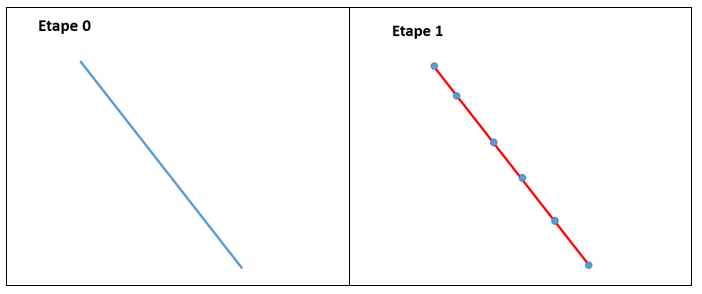
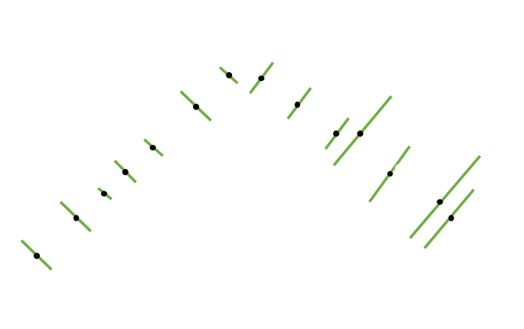
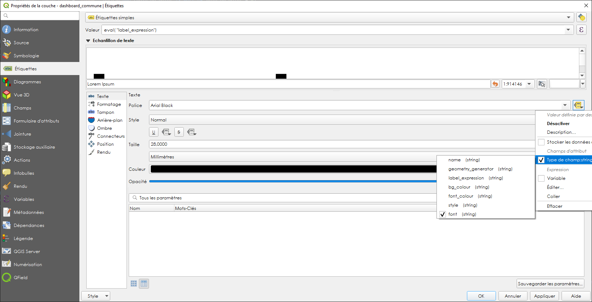
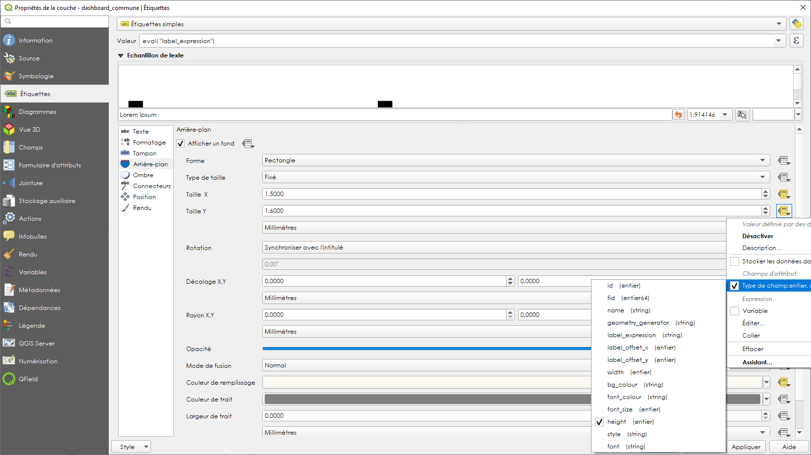

II- Application de saisie
1- Triggers et fonctions
1.1 Module d’aide à la numérotation
Il existe deux types de numérotation différents :
La numérotation classique
Cette numérotation consiste à numéroter de deux en deux avec les numéros pairs à droite de la voie et les numéros impairs à gauche. C’est le système historique en France utilisé par une majorité des communes, notamment en ville. L’inconvénient est que ce système n’est pas évolutif. En cas de nouvelles constructions s’intercalant entre deux numéros consécutifs il faut ajouter un numéro à extension (bis puis ter par exemple).
La numérotation métrique
Ce second système consiste à calculer le numéro en fonction de la distance depuis le début de la voie. Beaucoup plus évolutif car elle permet d’intercaler autant de numéros que l’on souhaite, cette numérotation permet également de donner une information précieuse sur la distance à parcourir jusqu’à la propriété. Cela est notamment très utile pour les secours ou les livreurs. Les numéros pairs et impairs peuvent être séparés de chaque côté de la voie, bien que ce ne soit pas obligatoire.
Quel que soit le type de numérotation choisi par la commune, l’application propose une aide à la numérotation automatique.
Pour la numérotation classique, une fonction soumet le numéro qu’elle considère être le plus juste à l’utilisateur en regardant les numéros déjà présents avant et après sur la voie. Au positionnement d’un premier point adresse à droite de la voie, l’outil proposera le n°2, puis pour un second le n°4 et ainsi de suite. À la création d’un point adresse entre le n°2 et le n°4, l’outil proposera un n°2 bis puis un n°2 ter etc.
DECLARE numa integer; numb integer; numc integer; sens boolean; s text; rec text; suff text[]; idvoie integer; isleft boolean; test boolean; BEGIN -- Get idvoie SELECT adresse.get_id_voie(pgeom) into idvoie; -- Aucune voie dévérouillée trouvée IF idvoie IS NULL THEN return query SELECT numc, s, idvoie; END IF; SELECT adresse.calcul_point_position(adresse.calcul_segment_proche(geom, pgeom),pgeom ) into isleft FROM adresse.voie WHERE statut_voie_num IS FALSE AND id_voie=idvoie; SELECT v.sens_numerotation into sens FROM adresse.voie v WHERE v.id_voie = idvoie; SELECT numero into numa FROM( SELECT ST_Distance(pgeom, p1.geom) as dist, p1.numero as numero FROM adresse.point_adresse p1, adresse.voie v WHERE statut_voie_num IS FALSE AND p1.id_voie = idvoie AND v.id_voie = idvoie AND (ST_LineLocatePoint(v.geom, ST_ClosestPoint(v.geom, pgeom)) - ST_LineLocatePoint(v.geom, ST_ClosestPoint(v.geom, p1.geom))) >0 AND isleft = adresse.calcul_point_position(adresse.calcul_segment_proche(v.geom, p1.geom), p1.geom) ORDER BY dist LIMIT 1) AS a; suff = ARRAY ['bis', 'ter', 'qua', 'qui', 'a', 'b', 'c', 'd', 'e']; SELECT numero into numb FROM( SELECT ST_Distance(pgeom, p1.geom) as dist, p1.numero as numero FROM adresse.point_adresse p1, adresse.voie v WHERE statut_voie_num IS FALSE AND p1.id_voie = idvoie AND v.id_voie = idvoie AND (ST_LineLocatePoint(v.geom, ST_ClosestPoint(v.geom, pgeom)) - ST_LineLocatePoint(v.geom, ST_ClosestPoint(v.geom, p1.geom))) <0 AND isleft = adresse.calcul_point_position(adresse.calcul_segment_proche(v.geom, p1.geom), p1.geom) ORDER BY dist LIMIT 1) AS b; IF numa IS NOT NULL AND numb IS NOT NULL THEN test = false; IF numb - numa > 2 THEN numc = numa+2; ELSE FOREACH rec IN ARRAY suff LOOP IF (SELECT TRUE FROM adresse.point_adresse p WHERE p.id_voie = idvoie AND p.numero = numa AND p.suffixe = rec) IS NULL AND NOT test THEN test = true; numc = numa; s = rec; END IF; END LOOP; END IF; ELSIF numa IS NOT NULL AND numb IS NULL THEN numc = numa+2; ELSIF numa IS NULL AND numb IS NOT NULL THEN IF numb - 2 >0 THEN numc = numb - 2; ELSIF numb - 2 <= 0 THEN test = false; FOREACH rec IN ARRAY suff LOOP IF (SELECT TRUE FROM adresse.point_adresse p WHERE p.id_voie = idvoie AND p.numero = numb AND p.suffixe = rec) IS NULL AND NOT test THEN test = true; numc = numb; s = rec; END IF; END LOOP; END IF; ELSIF numa IS NULL AND numb IS NULL THEN IF isleft AND NOT sens THEN numc = 1; ELSIF NOT isleft AND NOT sens THEN numc = 2; ELSIF isleft AND sens THEN numc = 2; ELSIF NOT isleft AND sens THEN numc = 1; END IF; END IF; return query SELECT numc, s, idvoie; END;
Pour la numérotation métrique, une fonction calcule la distance avec ST_Length et répartit aussi automatiquement les numéros pairs à droite et impairs à gauche. Via la variable sens, l’utilisateur peut sélectionner la voie qu’il a dessinée et la numéroter en sens inverse. L’application prend en compte cette information et calcule le nunéro “à l’envers”.
DECLARE num integer; idvoie integer; numc integer; sens boolean; res text; rec text; isleft boolean; test boolean; suff text[]; BEGIN -- Get idvoie SELECT adresse.get_id_voie(pgeom) into idvoie; -- Aucune voie dévérouillée trouvée IF idvoie IS NULL THEN return query SELECT numc, res, idvoie; END IF; SELECT v.sens_numerotation into sens FROM adresse.voie v WHERE v.id_voie = idvoie; SELECT adresse.calcul_point_position(adresse.calcul_segment_proche(geom, pgeom),pgeom) into isleft FROM adresse.voie WHERE statut_voie_num IS FALSE AND id_voie = idvoie; SELECT round(ST_Length(v.geom)*ST_LineLocatePoint(v.geom, pgeom))::integer into num FROM adresse.voie v WHERE id_voie = idvoie; suff = ARRAY ['bis', 'ter', 'qua', 'qui', 'a', 'b', 'c', 'd', 'e']; IF isleft AND num%2 = 0 AND NOT sens THEN num = num +1; ELSIF NOT isleft AND num%2 != 0 AND NOT sens THEN num = num + 1; ELSIF isleft AND num%2 != 0 AND sens THEN num = num +1; ELSIF NOT isleft AND num%2 = 0 AND sens THEN num = num + 1; END IF; test = false; WHILE NOT test LOOP IF (SELECT TRUE FROM adresse.point_adresse p WHERE p.id_voie = idvoie AND numero = num) IS NULL THEN test = true; numc = num; ELSE FOREACH rec IN ARRAY suff LOOP IF (SELECT TRUE FROM adresse.point_adresse p WHERE p.id_voie = idvoie AND p.numero = num AND p.suffixe = rec) IS NULL AND NOT test THEN test = true; numc = num; res = rec; END IF; END LOOP; END IF; num = num +2; END LOOP; RETURN query SELECT numc, res, idvoie; END;
2- Outils de contrôle
Solution SIG permettant d’affiner et de réduire le temps de contrôle de saisie des agents et d’assurer un suivi interactif des données.
Lorsque les communes effectuent la saisie dans l’application cartographique dédiée du Département, elles doivent créer un ensemble de points adresses (numérotés) et de linéaires de voies (dénommés). Cette saisie doit respecter un ensemble de règles et de normes afin d’assurer la cohérence du plan d’adressage de la commune et de ses voisines (même type de numérotation, même sens de numérotation, etc.) et d’optimiser la prise en compte de ces adresses par les organismes remplissant des missions de services aux citoyens (repérage facilité pour les secours, limite de nombre de caractères pris en compte par les GPS, etc.).
De plus, la base de données fournie doit répondre à des normes de qualité sémantiques (nom unique, etc.) et géographiques (pas d’auto intersection de linéaires, points adresses localisés dans une parcelle, etc.).
2.1 - Contrôles postgis
Liste de défauts fréquemment rencontrés :
Points adresse hors parcelles

Point adresse plus près d’une autre voie que celle à laquelle il est rattaché

Point adresse pair ou impair du mauvais côté de la voie

Erreurs de tracé de voies (ex : auto intersection)

Voie portant le même nom qu’une autre voie de la même commune

Voies avec un nom trop long
{kind=link}
Sur la base de cette liste, un ensemble de scripts SQL permet d’identifier automatiquement ces différents cas :
Détecter automatiquement des erreurs de saisie sémantiques dans les données adresse
Détecter les erreurs de saisie géométrique
Produire un bilan sur l’ensemble des données de référence.
Les scripts listés sont disponibles ici :Scripts de contrôle
Description des scripts
adresse.f_point_voie_distant()
Synopsis
Fonction trigger adresse.f_point_voie_distant() Identifie les points adresse plus près d’une autre voie que celle à laquelle ils appartiennent et retourne la distance entre le point et sa voie de rattachement.
Description
Retourne un BOOLEAN dans le champ c_erreur_dist_voie» de la table point_adresse. Retourne un Integer dans le champ « c_dist_voie» de la table point_adresse. Elle identifie ainsi la voie la plus proche dans un rayon de 10 km autour du point. Si la voie identifiée contient un « id_voie » différent de celui du point, la fonction retourne TRUE, sinon FALSE.
Elle calcule également la distance entre le point adresse et sa voie de rattachement. Cette fonction se déclenche à chaque modification de la table point_adresse au niveau de la ligne modifiée.
{kind=link}
adresse.point_proj()
Synopsis
Fonction adresse. point_proj (ptgeom geometry, ptgeom_proj geometry); Projette un point sur la voix de rattachement du point adresse.
Description
Retourne une géométrie point dans un champ nommé « geom_pt_proj». Elle crée un point à partir de la localisation du point le plus proche du point adresse d’entrée, sur la ligne possédant le même id_voie que ce point d’entrée. Fonctions postgis mobilisées : • ST_LineLocatePoint(voie.geom, point_adresse.geom) -> float between 0 and 1 • ST_LineInterpolatePoint(voie.geom, float between 0 and 1)

adresse.segment_prolong()
Synopsis
Fonction trigger adresse.segment_prolong(pgeom geometry, idv integer); Dessine un segment prolongé du point adresse au point projeté.
Description
Retourne une géométrie ligne dans un champ nommé « geom_segment_prolong». Dessine un segment du point adresse à un point projeté au 50/49e de la distance entre le point adresse et son point projeté. Fonctions postgis mobilisées : • ST_DISTANCE(ptgeom,ptgeom_proj) as distance_pt • ST_AZIMUTH(ptgeom,ptgeom_proj) as azimuth_pt • ST_TRANSLATE (ptgeom, sinus(azimuth_pt) * distance_pt + 50/49 distance_pt, cosinus(azimuth_pt)*distance_pt+50/49 distance_pt as translation_pt • ST_MakeLine(ptgeom, translation_pt)

adresse.f_cote_voie()
Synopsis
Fonction adresse.f_cote_voie(idv integer, geom_segment geometry);
Indique la position du point par rapport à sa voie de rattachement : droite, gauche, indéfinie. Sinon problème (voie mal tracée, point non rattaché à une voie, …)
Description
Retourne du texte dans un champ nommé « cote_voie».
Elle identifie si le segment prolongé créé à partir du point projeté sur la voie de rattachement du point adresse, croise la ligne à gauche, à droite, ne croise pas ou croise plusieurs fois.
Fonction postgis mobilisée : • ST_LineCrossingDirection(geom_segment, voie_geom)
{kind=link}
adresse.c_erreur_cote_parite()
Synopsis
Fonction adresse.c_erreur_cote_parite(numero integer, cote_voie geometry);
Identifie si le point adresse est pair ou impair et du mauvais côté de la voie à laquelle il est rattaché : true (erreur coté), false (pas derreur) ou indefini.
Sinon problème (voie mal tracée, point non rattaché à une voie, …)
Description
Retourne du texte dans un champ nommé « erreur_cote_parite».
Elle identifie si le côté duquel se trouve le point adresse correspond à la parité de son numéro.
Exemple Le numéro 5 impair se trouve du coté droit. • Erreur_cote_parite = True
adresse.f_erreur_cote_parite()
Synopsis
Fonction trigger adresse.f_erreur_cote_parite(); Identifie les points adresse pairs ou impairs du mauvais côté de la voie, à gauche ou à droite.
Description
Retourne un BOOLEAN dans le champ « c_erreur_cote_parite» de la table point_adresse. Elle identifie ainsi si le point adresse créé est à gauche ou à droite de la voie.
Si le point adresse est pair, mais à gauche de la voie ou si le point adresse est impair mais à droite de la voie, la fonction retourne TRUE, sinon FALSE.
Sinon indefini. Sinon problème (voie mal tracée, point non rattaché à une voie, …)
La fonction se déclenche à chaque modification du « geom » du point et s’éffectue en 4 étapes : 1- Projection du point adresse sur sa voie de rattachement • adresse.point_proj(pgeom geometry, idv integer) 2- Dessin d’un segment prolongé au 50/49 de la taille du segment initial. • adresse.point_segment_prolong(pgeom geometry, idv integer) 3- Identification du sens de croisement du segment prolongé • adresse.f_cote_voie(idv integer, geom_segment geometry) 4- Comparaison avec le numéro du point adresse d’origine. • adresse.c_erreur_cote_parite(numero integer, cote_voie geometry)
{kind=link}
adresse.segment_extract()
Synopsis
Fonction adresse.segment_extract(table_name varchar, id_line varchar, geom_line varchar);
Extrait des segments à partir de polylignes.
Description
Retourne une table composée de 3 champs ( id bigint, id_voie integer, geom_segment geometry).
Sélectionne les nœuds des voies. Puis trace des lignes entre les différents nœuds créés. Fonctions postgis mobilisées : • ST_DumpPoints(voie_geom) • ST_makeline()
{kind=link}
adresse.line_rotation()
Synopsis
Fonction adresse.line_rotation( lgeom geometry);
Retourne les segments au niveau de leur centroide raccourcis de 2/3
Description
Retourne une géométrie de lignes dans un champ nommé « geom_rotate».
Elle effectue une rotation à 80,1 degrès d’1/3 du segment au niveau de son centroide. Fonction postgis mobilisées : • ST_LineSubstring(lgeom, 0.333 ::real, 0.666::real) as substring • ST_centroid(lgeom) as centroid • st_rotate(substring, centroid) as rotate • ST_CollectionExtract(rotate)
{kind=link}
adresse.f_voie_erreur_trace()
Synopsis
Fonction adresse.f_voie_erreur_trace(); Identifier les voies avec erreur de tracés (plusieurs passages de lignes, voies recourbées sur elles-mêmes, etc.)
Description
Retourne un BOOLEAN dans le champ « c_erreur_trace» de la table adresse.voie.
Elle identifie ainsi si la voie qui croise plusieurs fois un segment retourné. La voie croise plusieurs fois, la fonction retourne TRUE, sinon FALSE.
La fonction se déclenche à chaque modif/ajout du « geom » de la voie et s’effectue en 3 étapes : 1- Extrait des segments à partir de polylignes • adresse.segment_extract(table_name varchar, id_line varchar, geom_line varchar 2- Retourne les segments au niveau de leur centroides raccourcis de 2/3 • adresse.line_rotation( lgeom geometry); 3- Identification du sens de croisement du segment prolongé • ST_LineCrossingDirection(New.geom, geom_rotate)
{kind=link}
adresse.f_bilan_pt_parcelle()
Synopsis
Fonction adresse.f_bilan_pt_parcelle(); Bilan du nombre de points adresse et dernière date de modification d’un point par parcelle.
Description
Retourne un integer dans le champ « nb_pt_adresse» et une DATE dans le champ « date_pt_modif » de la table adresse.parcelle.
Elle compte d’abord le nombre d’id point adresse par parcelle. Puis ajoute la date de modification associée nulle ou la plus récente.
La fonction se déclenche à chaque modif/ajout du « geom » du point adresse.

adresse.f_commune_repet_nom_voie()
Synopsis
Fonction trigger adresse.f_commune_repet_nom_voie();
Identifie les voies portant le même nom qu’une autre voie de la même commune.
Description
Retourne un BOOLEAN dans un champ nommé « c-repet-nom_voie» de la table adresse.voie.
Elle sélectionne le nom des communes, le nom des voies et le nombre d’itération du nom des voies par commune.
Si aucun nom n’est répertorié elle retournera FALSE sinon TRUE.
Elle se déclenche à chaque création ou modification d’une valeur du champ nom.

adresse.f_controle_longueur_nom()
Synopsis
Fonction trigger adresse.f_controle_longueur_nom() ;
Identifie les voies portant un nom de plus de 24 caractères.
Description
Retourne un BOOLEAN dans un champ nommé « c_long_nom» de la table adresse.voie.
Si le nom de la voie fait plus de 24 caractères la fonction retournera TRUE sinon FALSE
Elle se déclenche à chaque création ou modification d’une valeur du champ nom.

adresse.f_voie_double_saisie()
Synopsis
Fonction trigger adresse.f_voie_double_saisie() ;
Identifie les voies saisies en 2 fois.
Description
Retourne un BOOLEAN dans un champ nommé « c_saisie_double» de la table adresse.voie.
Cette requête retourne les voies à moins de 500 mètres de la nouvelle voie créée et dont le nom est proche de celui-ci. Si aucune voie n’est répertoriée elle retournera FALSE sinon TRUE.
Elle se déclenche à chaque création ou modification sur la table voie.
{kind=link}
2.2 - Dashboard QGis
Tableau de bord de suivi des indicateurs clés du projet, intégré aux logiciels SIG utilisés quotidiennement par les équipes et les partenaires.

Un outil de suivi intégré
Au sein du pôle SIG, nous souhaitions obtenir une vue d’ensemble des données produites au fur et à mesure de l’avancement du projet. Il fallait donc identifier une solution SIG permettant d’assurer un suivi interactif des données (contrôle des erreurs de saisies et bilan de l’avancement du projet). Elle devait s’intégrer au logiciel QGIS utilisé par le chargé de mission SIG du Département et sur l’application cartographique Lizmap à disposition des communes et des partenaires.
Nous nous sommes appuyés sur une méthodologie publiée sur le site <https://plugins.QGIS.org/geopackages/5/> (Sutton, 2020) , afin de développer un « dashboard » par manipulation des étiquettes de couches QGIS.
Cette méthode permet, en créant une couche spécifique de tableau de bord, de paramétrer le style des étiquettes de la couche et via requêtes sql d’agrégation, de produire un tableau interactif de suivi des données présentes dans le projet QGIS.
Les étapes de construction du dashboard
Etape 1 : création de la couche dashboard
Créer une couche « dashboard » de polygones composée des champs suivant :
{kind=link}
Etape 2 : créer un polygone
Éditer la couche « dashboard » et créer un polygone suivant l’emprise du projet.
{kind=link}
Etape 3 : symbologie de la couche
Ouvrir les propriétés de la couche dashboard et dans l’onglet symbologie sélectionner ‘aucun symbole’.
Le polygone doit disparaître à l’écran.

Etape 4 : paramétrer les étiquettes
Sélectionner ‘Etiquettes simples’ dans l’onglet Étiquettes. Dans le sous onglet valeur, faites une sélection par expression et inscrivez le code suivant : eval( “label_expression”)

Dans le sous-onglet texte cliquer sur l’icône à droite de la police. Aller chercher type de champ et pointer vers le champ font de la table « dashboard » créée à l’étape 1.
{kind=link}
Faire de même avec le style et pointer sur le champ style.
{kind=link}
Faire de même avec la couleur et pointer sur le champ _**font_color**_.
{kind=link}
Aller maintenant dans l’onglet arrière-plan.
Faire de même que précédemment avec la taille X et pointer sur le champ _**width**_.

Faire de même que précédemment avec la taille Y et pointer sur le champ _**height**_.
{kind=link}
Faire de même avec la couleur de remplissage et pointer sur le champ _**bg_colour**_.
{kind=link}
Aller maintenant dans l’onglet position.
Choisir l’option quadrant de l’image ci-dessous.
Cliquer sur l’icône à droite de décalage X,Y. Choisissez cette fois-ci la sélection par expression.
Dans le constructeur de requête qui s’ouvre, indiquer la variable suivante : array( “label_offset_x” , “label_offset_y”) Appuyer sur ok.

Pour finir, afin de fixer les étiquettes selon l’emprise de la carte, cocher la case générateur de géométrie et inscrire l’expression suivante : start_point( @map_extent )

Etape 5 : Remplir les champs de la table attributaire
Revenir à la table attributaire de « dashboard ».
Donner un nom qui mette en évidence l’action. Ici le titre de la première étiquette que nous appellerons fenêtre dashboard.
Puis indiquer dans le champ “label expression” l’expression qui s’affichera dans la première fenêtre dashboard, ici, simplement le titre ‘nbr pt total’
{kind=link}
Paramétrer ensuite les champs qui vont déterminer la taille, la position, la couleur de fond et la police de la première fenêtre Dashboard.

Au fur et à mesure des modifications des valeurs de champ, lorsque vous enregistrez, vous devez voir apparaître la 1ere fenêtre Dashboard et les modifications apportées.

Si aucune fenêtre n’apparaît au niveau de votre projet QGIS, jouez avec les différents champs (surtout label_offset x, label_offset y), cela peut être un problème de position de la fenêtre. Si elle n’apparaît toujours pas, reprenez les étapes précédentes.
Etape 6 : Créer de nouvelles fenêtres dashboard
Pour créer une nouvelle fenêtre dashboard, passer la table attributaire en mode édition. Copier la première ligne et coller la dans la partie blanche de la table attributaire. Une deuxième ligne identique apparaît.

Etape 7 : Paramétrer des requêtes dans les nouvelles lignes
Une fois la nouvelle entité créée, modifier les valeurs de champ de la seconde pour positionner la deuxième fenêtre sous la première. Vous pouvez modifier le champ label_expression avec une requête sql qgis qui vous permettra d’afficher la valeur souhaitée dans cette deuxième fenêtre.

Exemple de table attributaire dashboard et rendu
Ci-dessous, nous avons organisé la table avec une fenêtre par ligne comme suit : une 1ère fenêtre avec valeur « titre » suivie d’une fenêtre affichant une valeur « expression ».


Exemple de requêtes utilisées
1- Total de la somme des valeurs de la colonne pt_total de la couche Infos Communes
aggregate(layer:= 'Infos Communes', aggregate:='sum', expression:=pt_total)
2- Total de la somme des valeurs de la colonne pt_total des entités sélectionnées sur la couche Infos Communes
aggregate(layer:= 'Infos Communes', aggregate:='sum', expression:=pt_total, filter:=is_selected('Infos Communes', '$'currentfeature ) )
3- Nombre de communes accompagnées (champ : actif, valeur : oui) dans la couche Infos Communes
aggregate(layer:= 'Infos Communes', aggregate:='count', expression:= actif, filter:= actif LIKE 'Oui' )
Exemple de rendu
Le dashboard est utilisé par le pôle SIG afin de contrôler les erreurs de saisies en temps réel par les communes et présenter un bilan général de l’avancement du projet.
Ci-dessous, un exemple d’affichage des bilans adresses (en haut à droite) après sélection d’une commune sous QGIS.